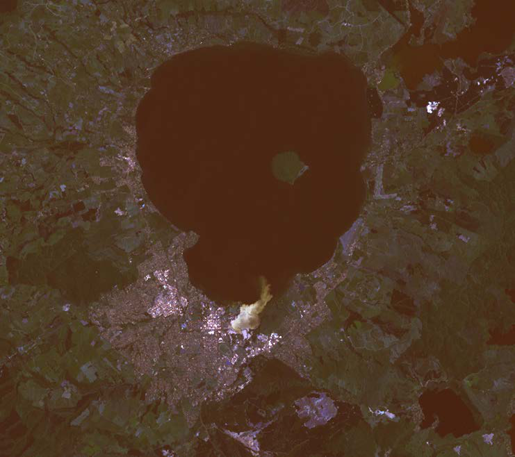
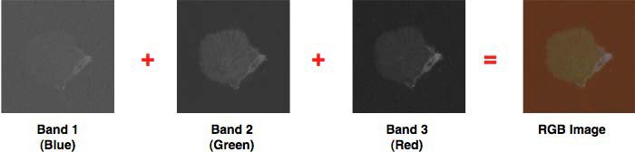
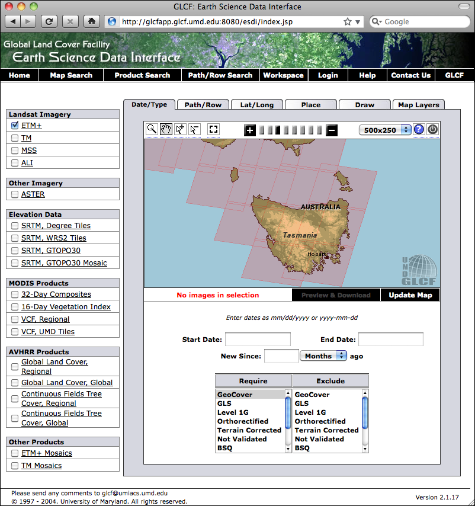
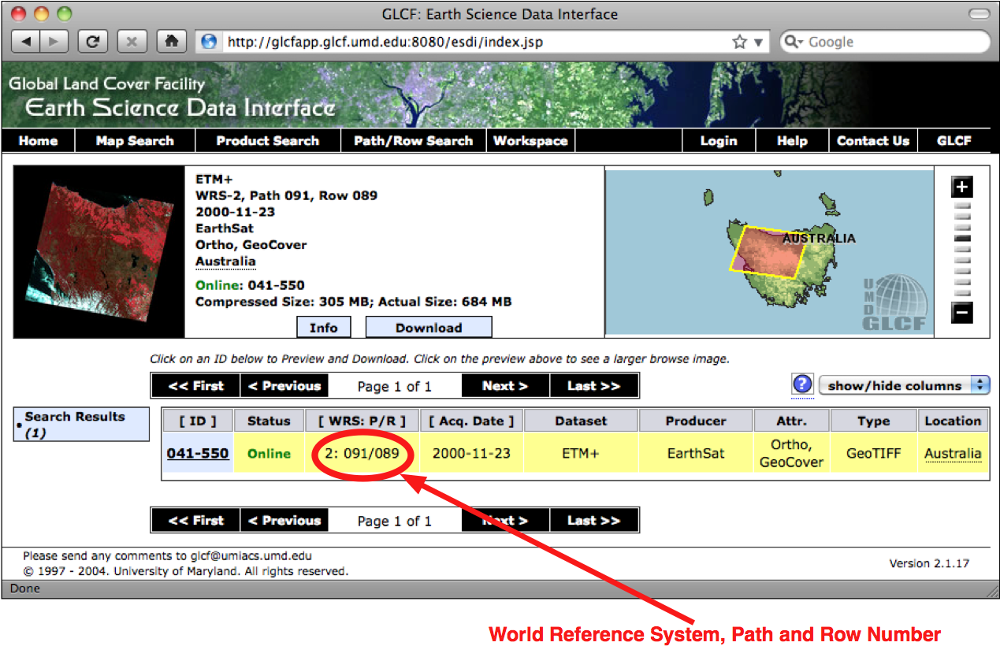
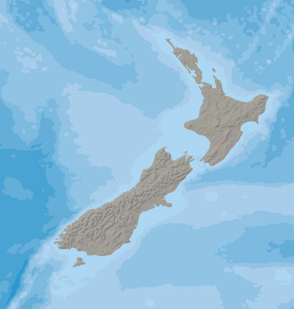
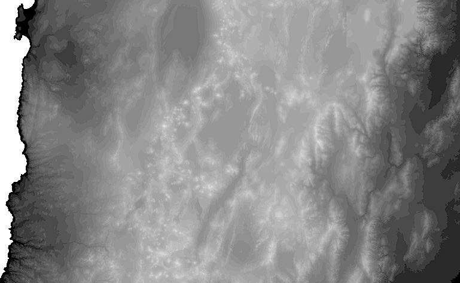
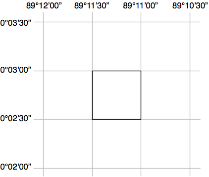
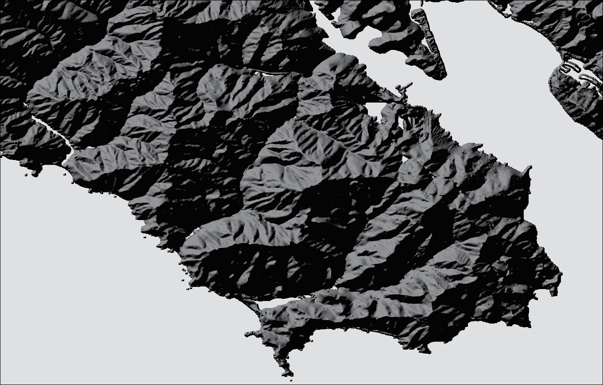
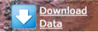
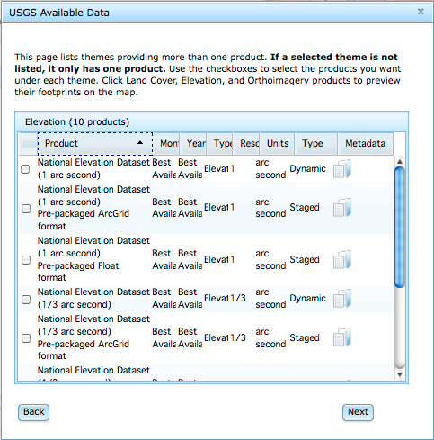

栅格格式地理空间数据源#
Sources of geospatial data in raster format
像Google Earth等程序的最引人入胜的方面之一就是能够“看到”地球，好像你在飞行其中。这是通过显示卫星和航拍照片，经过精心拼接，提供了从上方查看地球表面的错觉。
虽然编写你自己的Google Earth版本几乎是不可能的任务，但你可以获得免费的卫星影像，这些影像以栅格格式的地理空间数据提供，然后可以在你自己的地理空间应用程序中使用。
然而，栅格数据不仅仅限于地球表面的影像；还可以在栅格格式中找到其他有用的信息——例如， 数字高程图（DEM） 包含地球表面每个点的高度，可以用来计算任何所需点的海拔高度。DEM数据还可以用来生成二维图像，通过不同的阴影或颜色表示不同的高度，或使用一种叫做 阴影起伏影像 的技术来模拟丘陵的阴影效果。
在本节中，我们将看一下一个极为全面的卫星影像来源、Natural Earth网站上提供的栅格格式数据，以及一些免费的数字高程数据来源。
One of the most enthralling aspects of programs such as Google Earth is the ability to “see” the Earth as you appear to fly above it. This is achieved by displaying satellite and aerial photographs carefully stitched together to provide the illusion that you are viewing the Earth’s surface from above.
While writing your own version of Google Earth would be an almost impossible task, it is possible to obtain free satellite imagery in the form of raster format geospatial data, which you can then use in your own geospatial applications.
Raster data is not just limited to images of the Earth’s surface however; other useful information can be found in raster format—for example, digital elevation maps (DEM) contain the height of each point on the Earth’s surface, which can then be used to calculate the elevation of any desired point. DEM data can also be used to generate two-dimensional images that represent different heights using different shades or colors, or to simulate the shading effect of hills using a technique called shaded relief imagery.
In this section, we will look at an extremely comprehensive source of satellite imagery, the raster-format data available on the Natural Earth site, and some freely-available sources of digital elevation data.
Landsat#
Landsat
Landsat 是一个持续进行的地球表面图像收集项目。这个名称来源于“土地”和“卫星”两个词。自1972年以来，一组专用的卫星持续不断地收集图像。Landsat影像包括黑白图像、传统的红/绿/蓝（RGB）彩色图像，以及红外和热成像。彩色图像的分辨率通常为每像素30米，而来自Landsat 7的黑白图像的分辨率为每像素15米。
下图展示了新西兰罗托鲁瓦市的彩色校正Landsat卫星影像。市区位于湖泊的南侧（底部边缘）：
{kind=link}
Landsat is an ongoing effort to collect images of the Earth’s surface. The name is derived from land and satellite. A group of dedicated satellites have been continuously gathering images since 1972. Landsat imagery includes black and white, traditional red/green/blue (RGB) color images, as well as infrared and thermal imaging. The color images are typically at a resolution of 30 meters per pixel, while the black and white images from Landsat 7 are at a resolution of 15 meters per pixel.
The following screenshot shows color-corrected Landsat satellite imagery for the city of Rotorua, New Zealand. The city itself is on the southern (bottom) edge of a lake:
数据格式#
Data format
Landsat 图像通常以 GeoTIFF 文件格式提供。GeoTIFF 是一种带有地理标签的 TIFF 图像文件格式，允许将图像地理参考到地球表面。大多数 GIS 软件和工具，包括 GDAL，都能够读取 GeoTIFF 格式的文件。
由于这些图像直接来自卫星，您下载的文件通常将数据的不同波段存储在单独的文件中。根据卫星的不同，数据可能包含多达八个不同的波段。例如，Landsat 7 生成独立的红色、绿色和蓝色波段，以及三个不同的红外波段、一个热波段和一个高分辨率的“全色”（黑白）波段。
为了更好地理解这一过程，让我们仔细看看创建前面截图所需的过程。原始卫星数据由八个单独的 GeoTIFF 文件组成，每个波段一个文件。波段 1 包含蓝色数据，波段 2 包含绿色数据，波段 3 包含红色数据。然后，使用 GDAL 将这些独立的文件组合成一个单一的彩色图像，如下所示：
{kind=link}
另一个 Landsat 数据的复杂性在于，卫星拍摄的图像会受到多种因素的影响，包括地球的椭球形状、所拍摄地形的高度以及拍摄时卫星的方向。因此，原始数据并不完全准确地表示拍摄的特征。幸运的是， 正射校正 （Orthorectification）过程可以用来修正这些失真。在大多数情况下，可以直接下载正射校正后的卫星图像。
Landsat images are typically available in the form of GeoTIFF files. GeoTIFF is a geospatially tagged TIFF image file format, allowing images to be georeferenced onto the Earth’s surface. Most GIS software and tools, including GDAL, are able to read GeoTIFF formatted files.
Because the images come directly from a satellite, the files you can download typically store separate bands of data in separate files. Depending on the satellite the data came from, there can be up to eight different bands of data—for example, Landsat 7 generates separate red, green, and blue bands, as well as three different infrared bands, a thermal band, and a high-resolution “panchromatic” (black-and- white) band.
To understand how this works, let’s take a closer look at the process required to create the preceding screenshot. The raw satellite data consists of eight separate GeoTIFF files, one for each band. Band 1 contains the blue color data, band 2 contains the green color data, and band 3 contains the red color data. These separate files can then be combined using GDAL to produce a single color image as follows:
Another complication with the Landsat data is that the images produced by the satellites are distorted by various factors, including the ellipsoid shape of the Earth, the elevation of the terrain being photographed, and the orientation of the satellite as the image is taken. The raw data is therefore not a completely accurate representation of the features being photographed. Fortunately a process known as orthorectification can be used to correct these distortions. In most cases, orthorectified versions of the satellite images can be downloaded directly.
获取 Landsat 影像#
Obtaining Landsat imagery
获取 Landsat 图像的最简单方法是利用马里兰大学全球土地覆盖设施（Global Land Cover Facility）网站：
http://glcf.umiacs.umd.edu/data/landsat
点击 Download via Search and Preview Tool 链接，然后点击 Map Search。从 Landsat Imagery 列表中选择 ETM+，如果您放大到所需的地球区域，您将看到各种 Landsat 图像覆盖的区域：
{kind=link}
如果您选择选择工具（ ），您将能够点击所需区域，然后选择 Preview & Download 来选择要下载的图像。
另外，如果您知道所需区域的路径和行号，您可以通过 FTP 直接访问文件。路径和行号（以及数据使用的 世界参考系统（WRS））可以在 Preview & Download 页面找到：
{kind=link}
如果您希望通过 FTP 下载图像文件，主 FTP 站点位于：
ftp://ftp.glcf.umd.edu/glcf/Landsat
这些目录和文件的名称很复杂，其中包含了 WRS、路径和行号、卫星号、图像拍摄日期以及波段号。例如，一个名为 p091r089_7t20001123_z55_nn10.tif.gz 的文件指的是路径 091 和行号 089，这正好是前面截图中提到的塔斯马尼亚部分。数字 7 表示拍摄该图像的 Landsat 卫星号，20001123 是指图像拍摄的日期。文件名的最后部分 nn10 表示该文件是波段 1 的数据。
通过这种方式解释文件名，您可以下载正确的文件，并匹配所需的波段。有关这些不同的卫星和波段的更多信息，请参阅全球土地覆盖设施网站右上角的文档链接：
The easiest way to access Landsat imagery is to make use of the University of Maryland’s Global Land Cover Facility website:
http://glcf.umiacs.umd.edu/data/landsat
Click on the Download via Search and Preview Tool link, and then click on Map Search. Select ETM+ from the Landsat Imagery list, and if you zoom in on the desired part of the Earth you will see the areas covered by various Landsat images:
If you choose the selection tool ( ), you will be able to click on a desired area, then select Preview & Download to choose the image to download.
Alternatively, if you know the path and row number of the desired area of the earth, you can directly access the files via FTP. The path and row number (as well as the world reference system (WRS) used by the data) can be found on the Preview & Download page:
If you want to download the image files via FTP, the main FTP site is at:
ftp://ftp.glcf.umd.edu/glcf/Landsat
The directories and files have complex names which include the WRS, the path and row number, the satellite number, the date at which the image was taken, and the band number. For example, a file named p091r089_7t20001123_z55_nn10.tif. gz refers to path 091 and row 089, which happens to be the portion of Tasmania highlighted in the preceding screenshot. The 7 refers to the number of the Landsat satellite that took the image, and 20001123 is a datestamp indicating when the image was taken. The final part of the filename, nn10, tells us that the file is for band 1.
By interpreting the filename in this way, you can download the correct files, and match the files against the desired bands. For more information on what all these different satellites and bands mean, refer to the documentation links in the upper right-hand corner of the Global Land Cover Facility website:
Natural Earth#
Natural Earth
除了提供矢量地图数据外，Natural Earth 网站（http://www.naturalearthdata.com）还提供了五种不同类型的栅格地图，分别以 1:1000 万和 1:5000 万的比例尺提供：
命名较为独特的 Cross-Blended Hypsometric Tints 提供了一种基于海拔和气候的颜色选择的可视化效果。这些图像通常与阴影地形图结合使用，呈现出逼真的地球表面效果。
Natural Earth 1 和 Natural Earth 2 是更理想化的地球表面视图，使用浅色调和柔和的颜色过渡，是绘制自定义地理数据的理想背景。
Ocean Bottom 数据集结合了阴影地形图和基于深度的颜色绘制，提供了海底的可视化效果。
Shaded Relief 图像使用灰度来“阴影”地球表面，基于高分辨率的海拔数据。
另外，还提供了一种栅格数据集，提供了 1:5000 万比例尺的海底地形（bathymetry）可视化效果。以下截图是围绕新西兰的海洋区域的海底地形数据示例:
{kind=link}
In addition to providing vector map data, the Natural Earth website (http://www.naturalearthdata.com) makes available five different types of raster maps at both 1:10 million and 1:50 million scale:
The rather esoterically-named Cross-Blended Hypsometric Tints provide visualizations where the color is selected based on both elevation and climate. These images are then often combined with shaded relief images to make a realistic-looking view of the Earth’s surface.
Natural Earth 1 and Natural Earth 2 are more idealized views of the Earth’s surface, using a light palette and softly-blended colors, providing an excellent backdrop for drawing your own geospatial data.
The Ocean Bottom dataset uses a combination of shaded relief imagery and depth-based coloring to provide a visualization of the ocean floor.
The Shaded Relief imagery uses greyscale to “shade” the surface of the Earth based on high-resolution elevation data.
One additional raster dataset is available that provides bathymetry (underwater depth) visualizations at 1:50 million scale. The following screenshot is an example of the bathymetry data for the oceans surrounding New Zealand:
数据格式#
Data format
大多数 Natural Earth 网站上的栅格格式数据采用标准的 TIFF 图像格式。唯一的例外是海底地形数据，它以分层的 Adobe Photoshop 文件形式提供，每个深度带都使用不同的蓝色阴影表示。
在所有情况下，栅格数据采用地理（纬度/经度）投影，并使用标准的 WGS84 坐标系统，因此可以方便地在纬度和经度坐标与栅格图像中的像素坐标之间进行转换。
Most of the raster-format data on the Natural Earth site is in the standard TIFF image format. The one exception is the bathymetry data, which is provided in the form of a layered Adobe Photoshop file with differing shades of blue associated with each depth band.
In all cases, the raster data is in geographic (latitude/longitude) projection, and uses the standard WGS84 datum, making it easy to translate between latitude and longitude coordinates and pixel coordinates within the raster image.
获取和使用 Natural Earth 栅格数据#
Obtaining and using Natural Earth raster data
与矢量数据一样，Natural Earth 网站上的栅格格式数据也非常容易下载；只需访问该网站并点击 Get the Data 链接来下载栅格格式数据。您可以选择以 1:1000 万或 1:5000 万比例尺下载数据，并且还可以选择下载每个文件的大或小版本。
下载 TIFF 格式的数据后，您可以在图像编辑器中打开该文件，或使用标准的命令行工具（如 gdal_translate）来处理图像。对于海底地形数据，您可以直接在 Adobe Photoshop 中打开该文件，或者使用 GIMP 或 Flying Meat 的 Acorn 等更便宜的替代工具。每个深度带都是文件中的单独图层，默认情况下与特定的蓝色阴影相关联。如果您更喜欢不同的颜色，也可以进行选择，并选择要显示或隐藏的图层。完成后，您可以将图像压平并将其保存为 TIFF 文件，以便在程序中使用。
As with the vector data, the raster-format data on the Natural Earth site is easy to download; simply go to the site and follow the Get the Data link to download the raster-format data. You can choose to download the data at either 1:10 million scale, or 1:50 million scale, and you can also choose to download the large or small size of each file.
Once you have downloaded the TIFF format data, you can open the file in an image editor, or use a standard command-line utility such as gdal_translate to manipulate the image. For the bathymetry data, you can open the file directly in Adobe Photoshop, or use a cheaper alternative such as the GIMP or Flying Meat’s Acorn. Each depth band is a separate layer in the file, and by default is associated with a specific shade of blue. You can choose different colors if you prefer, and can select which layers to show or hide. When you are finished, you can then flatten the image and save it as a TIFF file for use in your programs.
全球陆地一公里基准高程 (GLOBE)#
Global Land One-kilometer Base Elevation (GLOBE)
GLOBE 是一项国际合作项目，旨在为全球范围内生产高质量的中分辨率数字高程（DEM）数据。其结果是提供了一系列免费的 DEM 文件，可用于多种地理空间分析和开发。
以下截图显示的是针对智利北部的 GLOBE DEM 数据，该数据已被转换为灰度图像：
{kind=link}
GLOBE is an international effort to produce high-quality, medium-resolution digital elevation (DEM) data for the entire world. The result is a set of freely-available DEM files, which can be used for many types of geospatial analysis and development.
The following screenshot shows GLOBE DEM data for northern Chile, converted to a grayscale image:
数据格式#
Data format
像所有的数字高程模型（DEM）数据一样，GLOBE使用栅格值表示地球表面某一点的海拔高度。在GLOBE的情况下，这些数据由32位带符号整数表示，表示高于（或低于）海平面的高度，单位为米。栅格数据中的每个单元格或“像素”代表地球表面上一个区域的高度，该区域的经度宽度为30弧秒，纬度高度也为30弧秒：
{kind=link}
请注意，30弧秒大约等于0.00833度的纬度或经度，这相当于一个大约一公里宽和一公里高的正方形。
原始的GLOBE数据仅仅是一个由32位整数组成的长列表，采用大端格式读取，栅格单元按从左到右、从上到下的顺序读取，如下所示：
x=0, y=0 |
x=1, y=0 |
… |
x=10800, y=0 |
x=0, y=1 |
x=1, y=1 |
… |
x=10800, y=1 |
… |
… |
… |
… |
x=0, y=6000 |
x=1, y=6000 |
… |
x=10800,y=6000 |
一个单独的头文件（.hdr）提供了有关DEM数据的更多详细信息，包括宽度、高度和地理参考位置。像GDAL这样的工具可以读取原始数据，只要提供了头文件。
Like all DEM data, GLOBE uses raster values to represent the elevation at a given point on the Earth’s surface. In the case of GLOBE, this data consists of 32-bit signed integers representing the height above (or below) sea level, in meters. Each cell or “pixel” within the raster data represents the elevation of a square on the Earth’s surface which is 30 arc-seconds of longitude wide, and 30 arc-seconds of latitude high:
Note that 30 arc-seconds equals approximately 0.00833 degrees of latitude or longitude, which equates to a square roughly one kilometer wide and one kilometer high.
The raw GLOBE data is simply a long list of 32-bit integers in big-endian format, where the cells are read left-to-right and then top-to-bottom, like this:
x=0, y=0 |
x=1, y=0 |
… |
x=10800, y=0 |
x=0, y=1 |
x=1, y=1 |
… |
x=10800, y=1 |
… |
… |
… |
… |
x=0, y=6000 |
x=1, y=6000 |
… |
x=10800,y=6000 |
A separate header (.hdr) file provides more detailed information about the DEM data, including the width and height and its georeferenced location. Tools such as GDAL are able to read the raw data as long as the header file is provided.
获取和使用 GLOBE 数据#
Obtaining and using GLOBE data
GLOBE 项目的官方网站可以通过以下链接访问：
http://www.ngdc.noaa.gov/mgg/topo/globe.html
要查看 GLOBE 数据的详细文档，您可以点击 Get Data Online 链接，以下载预先计算好的数据集，或者选择自定义区域下载 DEM 数据。
如果您下载了一个预先制作的瓦片文件，您还需要下载关联的 .hdr 文件，这样数据才能通过 GDAL 进行地理参考和处理。如果选择下载自定义区域，系统将为您创建一个合适的 *.hdr 文件—确保您选择的导出类型为 ESRI ArcView，这样生成的头文件格式符合 GDAL 的要求。
如果您下载了预制瓦片文件，找到合适的头文件可能会有些困难。可以从以下链接下载适合的 ESRI 格式头文件：
http://www.ngdc.noaa.gov/mgg/topo/elev/esri/hdr
下载数据后，只需将原始 DEM 文件与 .hdr 文件放入同一目录中。然后，您可以使用 GDAL 直接打开该文件，如下所示:
import osgeo.gdal
dataset = osgeo.gdal.Open("j10g.bil")
此数据集将包含一条栅格数据带，您可以使用 GDAL 库及相关工具进行翻译、读取或处理。
备注
要查看如何使用 GDAL 处理 DEM 数据的示例，请参考第 3 章《Python 地理空间开发库》中的 GDAL 部分。
The main website for the GLOBE project can be found at:
http://www.ngdc.noaa.gov/mgg/topo/globe.html
For detailed documentation of the GLOBE data, you can follow the Get Data Online link to download precalculated sets of data or to choose a given area to download DEM data for.
If you download one of the premade tiles, you will need to also download the associated .hdr file so that the data can be georeferenced and processed using GDAL. If you choose a custom area to download, a suitable .hdr file will be created for you—just make sure you choose an export type of ESRI ArcView so that the header is created in the format expected by GDAL.
If you download a premade tile, the header files can be quite hard to find. Suitable header files in ESRI format can be downloaded from:
http://www.ngdc.noaa.gov/mgg/topo/elev/esri/hdr
Once you have downloaded the data, simply place the raw DEM file into the same directory as the .hdr file. You can then open the file directly using GDAL, like this:
import osgeo.gdal
dataset = osgeo.gdal.Open("j10g.bil")
The dataset will consist of a single band of raster data, which you can then translate, read or process using the GDAL library and related tools.
备注
To see an example of using GDAL to process DEM data, please refer to the GDAL section in Chapter 3, Python Libraries for Geospatial Development.
国家高程数据集 (NED)#
National Elevation Dataset (NED)
National Elevation Dataset (NED) 是由美国地质调查局（USGS）提供的高分辨率数字高程数据集。它涵盖了美国本土、阿拉斯加、夏威夷和其他美国领土。美国大部分地区的高程数据分辨率为每像素 30 米或 10 米，某些区域提供每像素 3 米的分辨率。而阿拉斯加的高程数据通常只提供每像素 60 米的分辨率。
以下截图是使用 NED 高程数据生成的阴影地形图，展示的是旧金山马林半岛（Marin Headlands）的地形：
{kind=link}
The National Elevation Dataset (NED) is a high-resolution digital elevation dataset provided by the US Geological Survey. It covers the Continental United States, Alaska, Hawaii, and other US territories. Most of the United States is covered by elevation data at 30 meters/pixel or 10 meters/pixel resolution, with selected areas available at 3 meters/pixel. Alaska is generally only available at 60 meters/pixel resolution.
The following shaded relief screenshot was generated using NED elevation data for the Marin Headlands, San Francisco:
数据格式#
Data format
NED 数据可以以多种格式下载，包括 GeoTIFF 和 ArcGRID，这些格式都可以使用 GDAL 进行处理。
与其他 DEM 数据一样，栅格图像中的每个“像素”代表地球表面某个区域的高度。对于 NED 数据，高度是相对于 1988 年北美垂直基准（North American Vertical Datum of 1988，NAVD88）的米数。这大致等同于海平面以上或以下的高度，考虑到了潮汐和其他变化。
The NED data can be downloaded in various formats including GeoTIFF and ArcGRID, both of which can be processed using GDAL.
As with other DEM data, each “pixel” in the raster image represents the height of a given area on the Earth’s surface. For NED data, the height is in meters above or below a reference height known as the North American Vertical Datum of 1988. This roughly equates to the height above or below sea level, allowing for tidal and other variations.
获取和使用 NED 数据#
Obtaining and using NED data
国家地形数据集（NED）的主要网站可以在以下链接找到：
该网站介绍了 NED 数据集；要下载数据，您需要使用 National Map Viewer，其链接为：
http://viewer.nationalmap.gov/viewer/
使用该查看器时，您可以缩放到所需区域，然后点击页面顶部的 Download Data 选项：
点击该选项后，您可以根据当前地图范围进行下载，并选择 Elevation 作为您要下载的数据类型。您可以从多种数据格式中选择；GeoTIFF 是一个不错的选择。然后会弹出一个窗口，展示您可以下载的不同高程数据集：
从 National Map Viewer 下载数据的过程有点像在线购物：您将所需的项添加到“购物车”，然后“结账”，输入您的电子邮件地址。提交订单后，您会收到一封电子邮件，其中包含数据下载链接。
遗憾的是，National Map Viewer 的数据处理速度比较慢，您可能需要等待几分钟才能开始下载数据。
您将收到一个压缩的 .zip 格式文件，里面包含您所需的数据以及大量的元数据文件和关于 NED 数据集的文档。
备注
请注意，在打开文件之前，可能需要重命名文件以删除反斜杠，否则 GDAL 可能无法正确读取包含反斜杠的文件名。
下载完所需的 GeoTIFF 文件后，您可以像打开其他栅格数据集一样，在 GDAL 中打开它:
import osgeo.gdal
dataset = osgeo.gdal.Open("dem.tif")
最后，如果您正在处理 DEM 数据，您可以查看 gdaldem 工具，它是 GDAL 下载包的一部分。此程序使您能够轻松地查看和处理 DEM 栅格数据。前面的阴影显示图像就是通过此工具创建的，命令如下:
gdaldem hillshade dem.tif image.tiff
The main website for the National Elevation Dataset can be found at:
This site describes the NED dataset; to download the data you’ll have to use the National Map Viewer, which is available at:
http://viewer.nationalmap.gov/viewer/
To use the viewer, zoom in to the area you want, and then click on the Download Data option at the top of the page:
Click on this option to download by the current map extent, and select Elevation as the data you want to download. You can choose from a variety of data formats; GeoTIFF is a good option to use. A window then appears to show the various sets of elevation data you can download:
{kind=link}
Downloading data from the National Map Viewer is a bit like buying something online: you add the desired item to your “cart”, then you “checkout” your order and enter your e-mail address. Once you “place your order”, you’ll be sent an e-mail with links to where you can download the data you need.
Unfortunately, the National Map Viewer is quite slow to make the data available; expect to spend several minutes waiting for the data to start downloading.
You will receive a compressed .zip format file containing the data you want, along with a large number of metadata files and documentation about the National Elevation Dataset.
备注
Note that you might need to rename the files to remove the backslashes before you can open them; GDAL can get confused by filenames with backslashes.
Once you have downloaded the desired GeoTIFF files, you can open them in GDAL just as you would open any other raster dataset:
import osgeo.gdal
dataset = osgeo.gdal.Open("dem.tif")
Finally, if you are working with DEM data you might like to check out the gdaldem utility, which is included as part of the GDAL download. This program makes it easy to view and manipulate DEM raster data. The preceding shaded relief screenshot was created using this utility, like this:
gdaldem hillshade dem.tif image.tiff